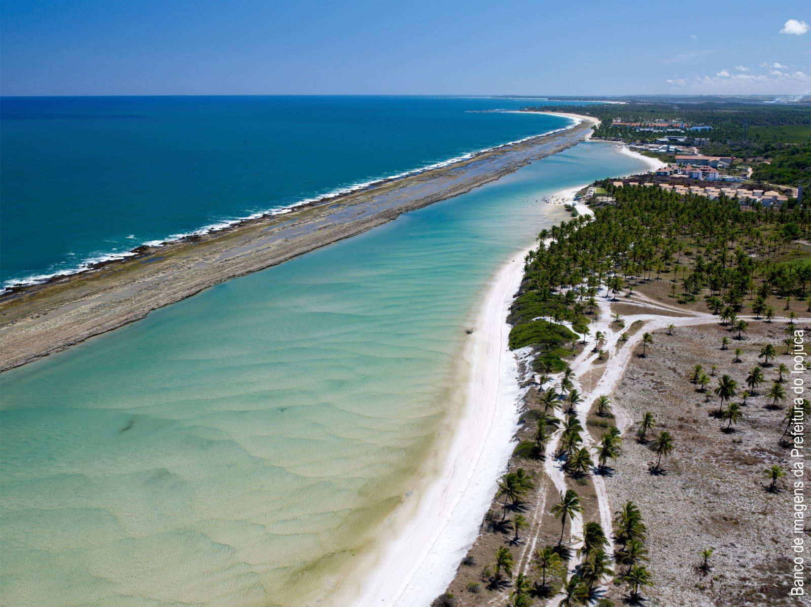

Ipojuca - PE
Ipojuca tem uma infinidade de locais que merecem ser vistados como já falado na página de ponto turistico é conhecida principalmente pelas praias, nessa página serão citados mais alguns lugares agradáveis de frequentar nessa cidade.
Praia de Muro Alto
É conhecida por suas piscinas naturais protegidas por um "muro" de recifes. É um ótimo local para relaxar e desfrutar das águas calmas e quentes.
Pontal de Maracaípe
O pontal de Maracaipe é uma área costeira proxima a Praia de Maracaípe, famosa especialmente pelo pôr do sol espetacular. É tambem uma região de grande beleza natural e bastante protegida por projetos de conservação.